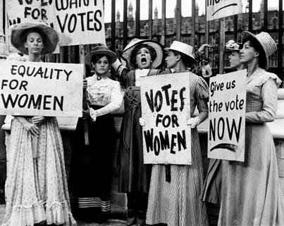
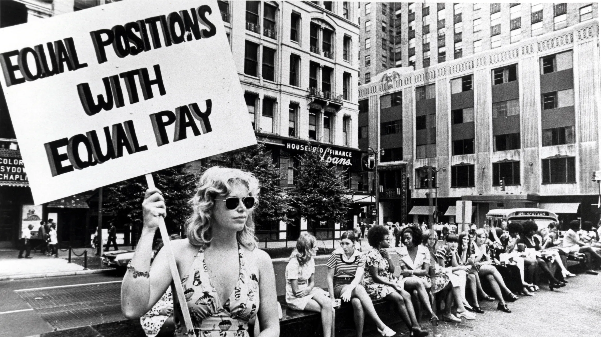
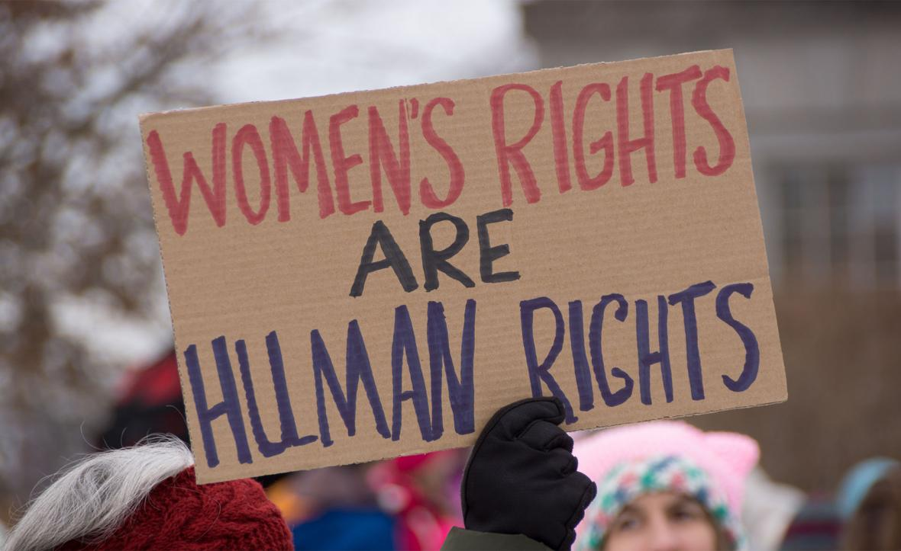
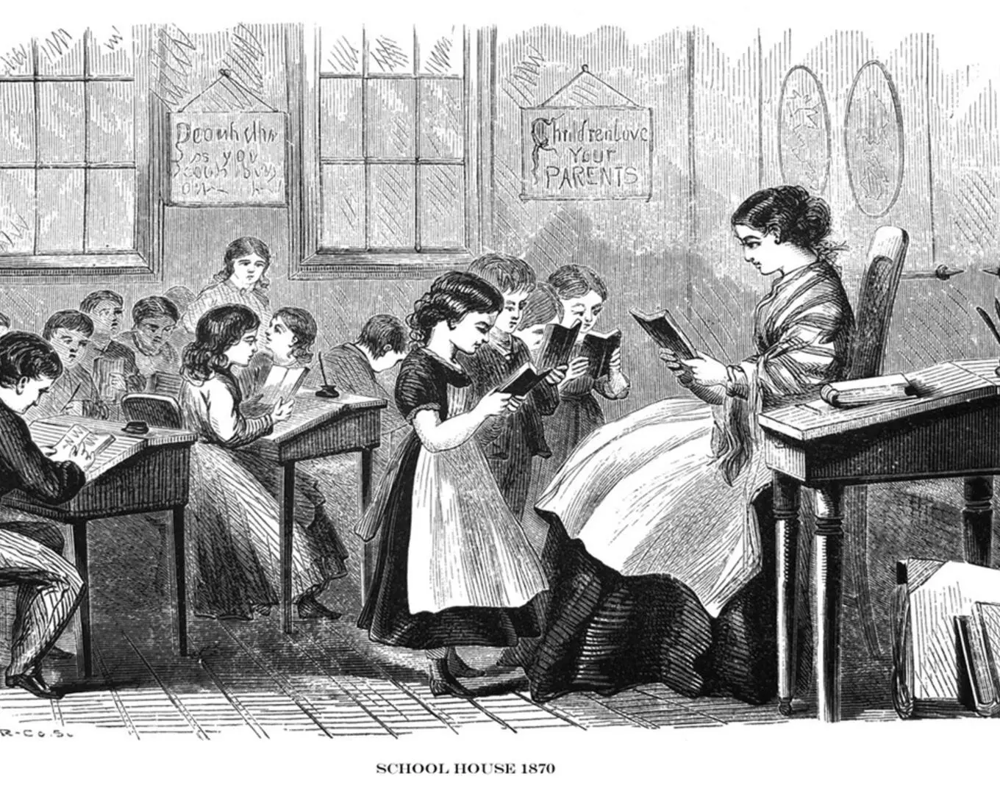

Main Issues & Big Moments
This section shows how the women's rights movement has focused on many issues over time, aiming for equality in every part of women's lives. These issues are deeply connected, showing how different forms of unfairness often overlap.
Voting & Being in Government
The fight for political equality began with the fundamental demand for the right to vote. This covers the long and arduous struggle from early demands for the right to vote in the mid-1800s all the way to the passage of the 19th Amendment in 1920.
This period saw decades of organized protests, powerful speeches, and persistent lobbying efforts that eventually won this basic right. Relevant and reliable evidence from this era includes countless petitions submitted to Congress, widespread newspaper coverage of suffrage parades and demonstrations, and compelling photographs of suffragists advocating for their cause.

ACLU Maine - Women's Suffrage and Racism
Economic Fairness & Job Rights
The fight for economic fairness addresses issues in the workplace. It focuses on the demand for fair pay for equal work and for women to access all types of jobs and professions, not just those traditionally labeled "women's jobs."
This push is rooted in the historical context of gender roles that for centuries assigned women primarily to unpaid domestic labor or to low-paying jobs with limited opportunities outside the home.
1963
Equal Pay Act
A key milestone was the Equal Pay Act of 1963, which aimed to close the wage gap by requiring employers to pay men and women equally for doing the same job.
Relevant and reliable evidence includes historical employment statistics, government reports on the gender pay gap, and landmark court cases related to workplace discrimination.

Teen Vogue - 9 to 5 Movement History
Ending Violence Against Women
The women's rights movement has actively pushed for laws to protect women from violence and for the creation of essential support services. This includes establishing domestic violence shelters, rape crisis centers, and providing legal aid for survivors.
These efforts have been instrumental in bringing these issues out of the shadows and into public awareness, creating a more responsive system. Relevant and reliable evidence includes the passage of key legislation like the Violence Against Women Act (VAWA) in the United States, as well as statistics on the prevalence of violence against women, and the powerful testimonies of survivors who have courageously shared their stories.

The Elders - Ending Violence Against Women
Education
The women's rights movement has fundamentally transformed educational opportunities for women. Historically, women were often denied access to higher education, or their access was severely restricted to specific fields deemed "appropriate" for women, like teaching or nursing.
The movement has focused on ensuring women have equal access to education at all levels, from basic schooling to universities and specialized professional training.
1972
Title IX
A landmark achievement was Title IX of the Education Amendments of 1972. This law made it illegal to discriminate based on sex in any school or education program that received federal funding, profoundly impacting women's access to academics and sports.
Historical Significance: Title IX opened countless doors for generations of girls and women in educational and athletic pursuits.

Facing History - Teaching Women's History
Timeline Reference
For a comprehensive timeline of women's suffrage and rights milestones:
.gif) Little Falls Historical Society - Women's Suffrage Timeline
Little Falls Historical Society - Women's Suffrage Timeline